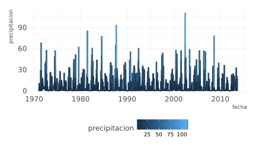
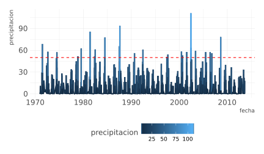
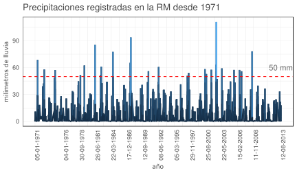
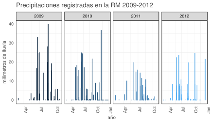
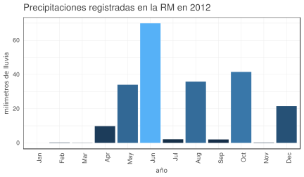

t|1i|2d|3y|1
d|1a|2t|1a|1
Joshua Kunst + Pachá, Mayo 2018
¿Qué haremos?
- Explorar, ordenar, graficar y agregar datos de las lluvias en la Región Metropolitana
- Desde un ejemplo sentar las bases para trabajar mejor
- Perder el miedo a R
Introducción
Introducción
Seguimos con el mismo flujo de datos:

Repaso clase anterior
No puedo explicar sin entender
El Análisis Exploratorio y la Estadística Descriptiva son parte clave para el entendimiento
Escuchar lo que los datos nos hablan
Conceptos
- Una variable es una cantidad, que puede ser medida: estatura, magnitud de un sismo, velocidad de un huracán, etc
- Un valor es un estado de la variable cuando se mide: 1.20 metros, 8° Richter
- Una observación o caso es un conjunto de mediciones -no de la misma variable necesariamente- pero si en un mismo instante y a un mismo objeto.
Conceptos
- Datos tabulados es un conjunto de valores cada uno asociado a una variable y una observación

Conceptos
Análisis Exploratorio de Datos
- Generar preguntas acerca de los datos
- Buscar respuestas visualizando, transformando los datos
- Hacer nuevas preguntas a partir de lo aprendido
Generar conocimiento
Lluvias en la RM
Lluvias en la RM
- Cada observación es un registro diario
- Todas las mediciones están registradas en milimetros
Manipulación de datos
Ejercicio 1
- Carga el Tidyverse
- Carga los datos
- ¿Cumple esto con Tidy Data?
- De no cumplir el criterio ordena los datos
Solución Ejercicio 1
library(tidyverse)
library(readxl)
precipitaciones_bruto <- read_excel("data/lluvias.xlsx")
precipitaciones_bruto## # A tibble: 365 x 44
## fecha pp1971 pp1972 pp1973 pp1974 pp1975 pp1976 pp1977
## <dttm> <dbl> <dbl> <dbl> <dbl> <dbl> <dbl> <dbl>
## 1 2017-01-01 00:00:00 0 0 0 0 0 0 0
## 2 2017-01-02 00:00:00 0 0 0 0 0 0 0
## 3 2017-01-03 00:00:00 0 0 0 0 0 0 0
## 4 2017-01-04 00:00:00 0 0 0 0 0 0 0
## 5 2017-01-05 00:00:00 0.1 0 0 0 0 0 0
## 6 2017-01-06 00:00:00 0 0 0 0 0 0 0
## 7 2017-01-07 00:00:00 0 0 0 0 0 0 0
## 8 2017-01-08 00:00:00 0 0 0 0 0 0 0
## 9 2017-01-09 00:00:00 0 0 0 0 0 0 0
## 10 2017-01-10 00:00:00 1.6 0 0 0 0 0 0
## # ... with 355 more rows, and 36 more variables: pp1978 <dbl>,
## # pp1979 <dbl>, pp1980 <dbl>, pp1981 <dbl>, pp1982 <dbl>, pp1983 <dbl>,
## # pp1984 <dbl>, pp1985 <dbl>, pp1986 <dbl>, pp1987 <dbl>, pp1988 <dbl>,
## # pp1989 <dbl>, pp1990 <dbl>, pp1991 <dbl>, pp1992 <dbl>, pp1993 <dbl>,
## # pp1994 <dbl>, pp1995 <dbl>, pp1996 <dbl>, pp1997 <dbl>, pp1998 <dbl>,
## # pp1999 <dbl>, pp2000 <dbl>, pp2001 <dbl>, pp2002 <dbl>, pp2003 <dbl>,
## # pp2004 <dbl>, pp2005 <dbl>, pp2006 <dbl>, pp2007 <dbl>, pp2008 <dbl>,
## # pp2009 <dbl>, pp2010 <dbl>, pp2011 <dbl>, pp2012 <dbl>, pp2013 <dbl>Solución Ejercicio 1
No cumple con Tidy Data, por lo tanto hay que ordenar
precipitaciones_ordenado <- precipitaciones_bruto %>%
gather(anio, precipitacion, -fecha)
precipitaciones_ordenado## # A tibble: 15,695 x 3
## fecha anio precipitacion
## <dttm> <chr> <dbl>
## 1 2017-01-01 00:00:00 pp1971 0
## 2 2017-01-02 00:00:00 pp1971 0
## 3 2017-01-03 00:00:00 pp1971 0
## 4 2017-01-04 00:00:00 pp1971 0
## 5 2017-01-05 00:00:00 pp1971 0.1
## 6 2017-01-06 00:00:00 pp1971 0
## 7 2017-01-07 00:00:00 pp1971 0
## 8 2017-01-08 00:00:00 pp1971 0
## 9 2017-01-09 00:00:00 pp1971 0
## 10 2017-01-10 00:00:00 pp1971 1.6
## # ... with 15,685 more rowsSolución Ejercicio 1
¿Puede mejorar? Sí, se puede simplificar
library(lubridate)
precipitaciones_ordenado <- precipitaciones_ordenado %>%
mutate(dia = day(fecha),
mes = month(fecha),
anio = str_sub(anio, 3, 6)) %>%
mutate(dia = ifelse(nchar(dia) == 1, paste0("0", dia), dia),
mes = ifelse(nchar(mes) == 1, paste0("0", mes), mes),
anio = as.integer(anio)) %>%
unite(fecha, anio, mes, dia, sep = "-", remove = F) %>%
mutate(fecha = ymd(fecha)) %>%
select(fecha, anio, precipitacion)Solución Ejercicio 1
Resultado final
precipitaciones_ordenado## # A tibble: 15,695 x 3
## fecha anio precipitacion
## <date> <int> <dbl>
## 1 1971-01-01 1971 0
## 2 1971-01-02 1971 0
## 3 1971-01-03 1971 0
## 4 1971-01-04 1971 0
## 5 1971-01-05 1971 0.1
## 6 1971-01-06 1971 0
## 7 1971-01-07 1971 0
## 8 1971-01-08 1971 0
## 9 1971-01-09 1971 0
## 10 1971-01-10 1971 1.6
## # ... with 15,685 more rowsEjercicio 2
Filtra los datos a partir del año 2000
Solución Ejercicio 2
precipitaciones_ordenado %>%
filter(anio >= 2000)## # A tibble: 5,110 x 3
## fecha anio precipitacion
## <date> <int> <dbl>
## 1 2000-01-01 2000 0
## 2 2000-01-02 2000 0
## 3 2000-01-03 2000 0
## 4 2000-01-04 2000 0
## 5 2000-01-05 2000 0
## 6 2000-01-06 2000 0
## 7 2000-01-07 2000 0
## 8 2000-01-08 2000 0
## 9 2000-01-09 2000 0
## 10 2000-01-10 2000 0
## # ... with 5,100 more rowsEjercicio 3
Filtra las precipitaciones mayores o iguales a 50mm
Solución Ejercicio 3
precipitaciones_ordenado %>%
filter(precipitacion >= 50)## # A tibble: 29 x 3
## fecha anio precipitacion
## <date> <int> <dbl>
## 1 1971-06-20 1971 68.7
## 2 1972-08-12 1972 58
## 3 1974-06-29 1974 57.3
## 4 1978-11-16 1978 51.7
## 5 1979-07-26 1979 62.5
## 6 1981-05-30 1981 85.6
## 7 1982-05-12 1982 51.9
## 8 1982-06-26 1982 61.2
## 9 1984-07-04 1984 77.6
## 10 1984-07-10 1984 50.2
## # ... with 19 more rowsEjercicio 4
Crea una nueva tabla con las precipitaciones mayores a cero
Solución Ejercicio 4
precipitaciones_ordenado_2 <- precipitaciones_ordenado %>%
filter(precipitacion > 0)
precipitaciones_ordenado_2## # A tibble: 2,261 x 3
## fecha anio precipitacion
## <date> <int> <dbl>
## 1 1971-01-05 1971 0.1
## 2 1971-01-10 1971 1.6
## 3 1971-01-11 1971 0.1
## 4 1971-01-22 1971 11
## 5 1971-02-28 1971 0.1
## 6 1971-03-02 1971 0.1
## 7 1971-04-19 1971 0.1
## 8 1971-04-20 1971 4.4
## 9 1971-04-25 1971 0.1
## 10 1971-05-14 1971 3.6
## # ... with 2,251 more rowsGraficar datos
Ejercicio 5
Grafica la serie de precipitaciones a partir del ejercicio anterior
Solución Ejercicio 5
g1 <- precipitaciones_ordenado_2 %>%
ggplot(aes(x = fecha, y = precipitacion, color = precipitacion)) +
geom_line()
g1
Ejercicio 6
Agrega una línea horizontal para mostrar claramente los registros que superan los 50 mm diarios
Solución Ejercicio 6
g1 <- g1 +
geom_hline(yintercept = 50, color = "red", linetype = "dashed")
g1
Ejercicio 7
- Agrega el texto “50mm” a la línea de corte (al lado derecho)
- Remueve la leyenda
- Usa el tema
white
Solución Ejercicio 7
fmax <- max(precipitaciones_ordenado_2$fecha)
g1 <- g1 +
annotate("text", fmax, 50, vjust = -1, label = "50 mm") +
theme(legend.position = "none") + theme_bw()
g1
Ejercicio 8
- Agrega etiquetas a los ejes del gráfico
- Usa las fechas mínima y máxima como límites del eje x
- Agrega algunas fechas como referencia (i.e intervalos de 5 años o 1825 días)
- Agrega título
Solución Ejercicio 8
fmin <- min(precipitaciones_ordenado_2$fecha)
g1 <- g1 +
labs(y = "milimetros de lluvia", x = "año") +
theme(legend.position = "none",
axis.text.x = element_text(angle = 90, hjust = 1)) +
scale_x_date(date_labels = "%d-%m-%Y",
limits = c(fmin, fmax),
breaks = c(fmin, fmin + seq(1825,1825*8,1000), fmax)) +
ggtitle("Precipitaciones registradas en la RM desde 1971")Solución Ejercicio 8
g1
Ejercicio 9
- Usa
facets_wrappara crear mini gráficos para los años 2009 - 2012 - Recuerda incluir etiquetas en los ejes y título
Solución Ejercicio 9
precipitaciones_ordenado_2 %>%
filter(anio >= 2009 & anio <= 2012) %>%
ggplot(aes(x = fecha, y = precipitacion, color = anio)) +
geom_col() +
facet_wrap("anio", scales = "free_x", ncol = 4) +
theme_bw() +
theme(legend.position = "none",
axis.text.x = element_text(angle = 90, hjust = 1)) +
labs(y = "milimetros de lluvia", x = "año") +
ggtitle("Precipitaciones registradas en la RM 2009-2012")Solución Ejercicio 9

Ejercicio 10
- Obten la suma de precipitaciones por mes en un año a tu elección
- Grafica los resultados
Solución Ejercicio 10
precipitaciones_ordenado %>%
filter(anio == 2012) %>%
mutate(mes = month(fecha, label = TRUE)) %>%
group_by(mes) %>%
summarise(pmes = sum(precipitacion)) %>%
ggplot(aes(x = mes, y = pmes)) +
geom_col() +
theme_bw() +
theme(legend.position = "none",
axis.text.x = element_text(angle = 90, hjust = 1)) +
labs(y = "milimetros de lluvia", x = "año") +
ggtitle("Precipitaciones registradas en la RM en 2012")Solución Ejercicio 10
